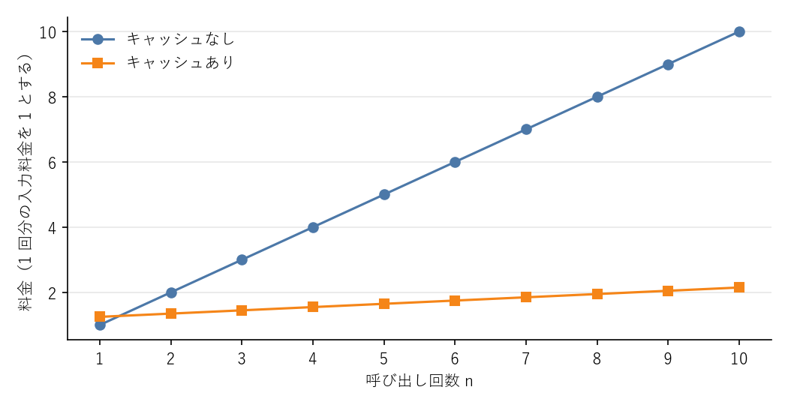

6. API の応用
本章では、API 入門の内容を踏まえ、実際のアプリケーション開発でよく使う機能を説明します。
6.1. 思考と effort
6.1.1. 適応的思考
Claude Haiku 4.5 を除く現行のモデルは、回答を書く前に内部で検討を行う適応的思考（adaptive thinking）を備えています。問題が簡単ならほとんど考えずに答え、難しければ時間をかけて考えるというように、思考の量をモデル自身が判断します。
Claude Opus 5.5 と Claude Fable 5.1 では思考を無効にできず、常に適応的思考が働きます。思考の量は、次に説明する effort で調整します。
思考の内容は、既定では応答に含まれません（thinking ブロックは返されますが、本文は空です）。検討の過程を利用者に見せたい場合は、思考の要約を返すように指定します。
1response = client.messages.create(
2 model="claude-opus-5-5",
3 max_tokens=16000,
4 thinking={"type": "adaptive", "display": "summarized"},
5 messages=[{"role": "user", "content": "この SQL が遅い原因を調べて..."}],
6)
7for block in response.content:
8 if block.type == "thinking":
9 print("[思考の要約]", block.thinking)
10 elif block.type == "text":
11 print(block.text)
思考に使われたトークンは、表示の有無にかかわらず出力トークンとして課金されます。
6.1.2. effort
effort は、思考の深さと応答全体の丁寧さを調整するパラメーターで、output_config に指定します。
1response = client.messages.create(
2 model="claude-opus-5-5",
3 max_tokens=16000,
4 output_config={"effort": "high"},
5 messages=[{"role": "user", "content": "..."}],
6)
値 |
用途の目安 |
|---|---|
|
分類、短い質問への回答など、速度と料金を優先する処理 |
|
一般的な処理。Claude Opus 5.5 の既定値 |
|
品質を重視する処理。多くのモデルの既定値 |
|
コーディングやエージェントなど、多段階の複雑な作業 |
|
料金より正確さが重要な、最も難しい問題 |
effort は Claude Haiku 4.5 では使えません（指定するとエラーになります）。また、effort は思考の量だけでなく、応答の長さやツールを呼び出す回数にも影響します。effort を上げると品質は上がる傾向にありますが、出力トークンと応答時間も増えます。既定値はモデルによって異なるため、明示的に指定しておくと、モデルを変更したときの挙動の変化を防げます。適切な段階は処理の内容によって異なるので、品質評価と運用で説明する評価を使って決めるのが確実です。
6.1.3. サンプリングパラメーター
古いモデルでは、出力のばらつきを temperature などのパラメーターで調整していました。現行のモデルではこれらのパラメーターは使えず、指定するとエラーになります。出力の傾向は、プロンプトと effort で調整してください。
6.2. 構造化出力
応答をプログラムで処理する場合、「JSON で答えて」とプロンプトで頼むだけでは、形式が崩れる可能性を排除できません。構造化出力を使うと、応答が指定したスキーマに必ず従うようになります。
Python SDK では、Pydantic のモデルを messages.parse() の output_format に渡すのが最も簡単です。
1"""構造化出力で、自由記述の文章から決まった形式のデータを取り出すサンプル.
2
3Pydantic のモデルを output_format に渡すと、応答がそのスキーマに従うことが
4保証され、検証済みのオブジェクトとして受け取れます。
5
6実行例:
7 python ex07_structured_output.py
8"""
9
10import os
11from typing import Literal
12
13import anthropic
14from pydantic import BaseModel
15
16MODEL = os.environ.get("CLAUDE_MODEL", "claude-opus-5-5")
17
18INQUIRY = """\
19お世話になっております。株式会社サンプルの山田です。
20先週導入した会計システムで、月次レポートの PDF 出力が 3 回に 1 回ほど
21失敗します。締め日が 10 月 31 日なので、それまでに解決したいです。
22連絡先は yamada@example.com です。
23"""
24
25
26class Ticket(BaseModel):
27 """問い合わせから抽出するチケット情報."""
28
29 customer_name: str
30 company: str
31 email: str
32 summary: str
33 priority: Literal["high", "medium", "low"]
34 deadline: str | None
35
36
37def main() -> None:
38 client = anthropic.Anthropic()
39
40 response = client.messages.parse(
41 model=MODEL,
42 max_tokens=4096,
43 system=(
44 "問い合わせ文からチケット情報を抽出してください。"
45 "priority は high / medium / low のいずれかで判定してください。"
46 ),
47 messages=[{"role": "user", "content": INQUIRY}],
48 output_format=Ticket,
49 )
50
51 ticket = response.parsed_output
52 if ticket is None:
53 print(f"抽出に失敗しました (stop_reason={response.stop_reason})")
54 return
55
56 # 検証済みの Ticket オブジェクトとして扱える
57 print(ticket.model_dump_json(indent=2))
58
59
60if __name__ == "__main__":
61 main()
response.parsed_output には、検証済みの Ticket オブジェクトが入ります（51 行目）。応答が拒否された場合や max_tokens に達した場合は None になるため、確認してから使います。
Pydantic を使わない場合は、messages.create() の output_config に JSON スキーマを直接指定します。
1response = client.messages.create(
2 model="claude-opus-5-5",
3 max_tokens=4096,
4 messages=[{"role": "user", "content": "..."}],
5 output_config={
6 "format": {
7 "type": "json_schema",
8 "schema": {
9 "type": "object",
10 "properties": {
11 "title": {"type": "string"},
12 "tags": {"type": "array", "items": {"type": "string"}},
13 },
14 "required": ["title", "tags"],
15 "additionalProperties": False,
16 },
17 },
18 },
19)
6.3. 画像と PDF の入力
6.3.1. 画像
Claude は画像の内容を理解できます。スクリーンショットの読み取り、図表の解釈、手書きメモの文字起こしなどに使えます。画像は、content をブロックのリストにして、テキストと一緒に送ります。
1"""画像を入力して内容を説明してもらうサンプル.
2
3画像ファイルを Base64 で符号化し、テキストと一緒に送信します。
4対応形式は JPEG、PNG、GIF、WebP です。
5
6実行例:
7 python ex08_vision.py screenshot.png
8"""
9
10import base64
11import os
12import sys
13from pathlib import Path
14from typing import Literal
15
16import anthropic
17
18MODEL = os.environ.get("CLAUDE_MODEL", "claude-opus-5-5")
19
20MediaType = Literal["image/jpeg", "image/png", "image/gif", "image/webp"]
21
22MEDIA_TYPES: dict[str, MediaType] = {
23 ".jpg": "image/jpeg",
24 ".jpeg": "image/jpeg",
25 ".png": "image/png",
26 ".gif": "image/gif",
27 ".webp": "image/webp",
28}
29
30
31def describe_image(client: anthropic.Anthropic, path: Path) -> str:
32 """画像の内容を説明する文章を返す."""
33 media_type = MEDIA_TYPES.get(path.suffix.lower())
34 if media_type is None:
35 raise ValueError(f"対応していない形式です: {path.suffix}")
36
37 data = base64.standard_b64encode(path.read_bytes()).decode("ascii")
38
39 response = client.messages.create(
40 model=MODEL,
41 max_tokens=2048,
42 messages=[
43 {
44 "role": "user",
45 "content": [
46 # 画像はテキストより前に置くと精度が上がりやすい
47 {
48 "type": "image",
49 "source": {
50 "type": "base64",
51 "media_type": media_type,
52 "data": data,
53 },
54 },
55 {
56 "type": "text",
57 "text": "この画像に何が写っているか説明してください。",
58 },
59 ],
60 },
61 ],
62 )
63 return "".join(b.text for b in response.content if b.type == "text")
64
65
66def main() -> None:
67 if len(sys.argv) != 2:
68 print("使い方: python ex08_vision.py <画像ファイル>")
69 sys.exit(1)
70
71 client = anthropic.Anthropic()
72 print(describe_image(client, Path(sys.argv[1])))
73
74
75if __name__ == "__main__":
76 main()
画像は Base64 で符号化して送るほか、URL で指定することもできます（"source": {"type": "url", "url": "https://..."}）。画像のサイズが大きいほど入力トークンが増えるため、必要以上に高い解像度の画像は縮小してから送ると料金を抑えられます。
6.3.2. PDF
PDF は document ブロックで送ります。Claude は本文のテキストだけでなく、ページ上の図や表も読み取ります。
1import base64
2from pathlib import Path
3
4pdf_data = base64.standard_b64encode(Path("spec.pdf").read_bytes())
5
6response = client.messages.create(
7 model="claude-opus-5-5",
8 max_tokens=16000,
9 messages=[
10 {
11 "role": "user",
12 "content": [
13 {
14 "type": "document",
15 "source": {
16 "type": "base64",
17 "media_type": "application/pdf",
18 "data": pdf_data.decode("ascii"),
19 },
20 "citations": {"enabled": True},
21 },
22 {"type": "text", "text": "この仕様書の要件を一覧にしてください。"},
23 ],
24 },
25 ],
26)
引用（citations）を有効にすると（20 行目）、応答の各部分に、根拠となった文書の箇所（PDF ではページ番号）が付きます。回答の根拠を利用者に示したい場合に便利です。
同じファイルを何度も送る場合は、Files API でファイルを一度アップロードし、発行されたファイル ID で参照すると、毎回ファイルの内容を送らずに済みます。
6.4. プロンプトキャッシュ
6.4.1. 仕組み
長い資料に対して質問を繰り返すアプリケーションでは、毎回同じ資料を入力として送ることになります。プロンプトキャッシュを使うと、入力の先頭から指定した位置までの処理結果がサーバーに一定時間（既定では 5 分）保存され、次の呼び出しで再利用されます。
キャッシュに書き込むトークンは通常の入力より少し高く、キャッシュから読み出すトークンは通常の入力よりはるかに安く課金されます。また、読み出した部分の処理が省かれるため、応答までの時間も短くなります。
1"""プロンプトキャッシュで、共通の長い前置き部分を再利用するサンプル.
2
3同じ長い資料に対して質問を繰り返すと、2 回目以降は資料部分が
4キャッシュから読み出され、料金と応答時間が下がります。
5
6実行例:
7 python ex09_prompt_caching.py
8"""
9
10import os
11
12import anthropic
13from anthropic.types import TextBlockParam
14
15MODEL = os.environ.get("CLAUDE_MODEL", "claude-opus-5-5")
16
17# 実際には社内規程や仕様書などの長い資料を読み込む想定。
18# キャッシュされるには一定以上 (モデルにより数百から数千トークン) の長さが必要。
19MANUAL = "\n".join(
20 f"第 {i} 条: 申請書は所定の様式で提出し、上長の承認を得ること。"
21 for i in range(1, 400)
22)
23
24QUESTIONS = [
25 "第 10 条の内容を教えてください。",
26 "第 200 条の内容を教えてください。",
27]
28
29
30def main() -> None:
31 client = anthropic.Anthropic()
32
33 # 変化しない部分 (資料) を先頭に置き、cache_control を付ける
34 system: list[TextBlockParam] = [
35 {"type": "text", "text": "あなたは社内規程に関する質問に答える担当者です。"},
36 {
37 "type": "text",
38 "text": MANUAL,
39 "cache_control": {"type": "ephemeral"},
40 },
41 ]
42
43 for question in QUESTIONS:
44 response = client.messages.create(
45 model=MODEL,
46 max_tokens=1024,
47 system=system,
48 messages=[{"role": "user", "content": question}],
49 )
50 usage = response.usage
51 print(f"Q: {question}")
52 print(f" キャッシュ書き込み: {usage.cache_creation_input_tokens}")
53 print(f" キャッシュ読み出し: {usage.cache_read_input_tokens}")
54 print(f" 通常の入力 : {usage.input_tokens}")
55
56
57if __name__ == "__main__":
58 main()
キャッシュは前方一致で判定されます。入力は tools、system、messages の順に並べられ、cache_control を付けた位置までが、前回と 1 文字でも異なるとキャッシュは使われません。次の点に注意してください。
変化しない内容（資料、ツール定義、固定の指示）を前に、変化する内容（利用者の質問）を後ろに置きます
システムプロンプトに現在時刻やリクエスト ID のような毎回変わる値を入れません
キャッシュされるには一定以上の長さ（モデルによって異なり、数百から数千トークン）が必要
効いているかどうかは
usage.cache_read_input_tokensで確認します。0 のままなら、前方の内容がどこかで変わっています
6.4.2. 料金の試算
共通部分のトークン数を \(N_{\mathrm{c}}\)、同じ共通部分を使う呼び出しの回数を \(n\)、入力単価を \(P_{\mathrm{in}}\) とします。キャッシュへの書き込み単価を入力単価の \(w\) 倍、読み出し単価を \(r\) 倍とすると、共通部分にかかる料金は次のようになります。
\(C_{\mathrm{none}}\) はキャッシュを使わない場合、\(C_{\mathrm{cache}}\) は 1 回目に書き込み、2 回目以降に読み出す場合の料金です。例えば \(w = 1.25\)、\(r = 0.1\) のとき、\(n = 2\) で \(C_{\mathrm{cache}} = 1.35 \, N_{\mathrm{c}} P_{\mathrm{in}}\) となり、キャッシュを使わない場合の \(2 \, N_{\mathrm{c}} P_{\mathrm{in}}\) を下回ります。つまり、1 回でも再利用されれば元が取れます。\(w\) と \(r\) の実際の値はモデルとキャッシュの保存期間によって異なるため、公式の料金ページで確認してください。

図 6.1 キャッシュの有無による共通部分の料金（w = 1.25、r = 0.1 の場合）
6.5. バッチ処理
大量のデータを処理するが、結果がすぐに必要ではない場合は、Message Batches API を使います。多数のリクエストをまとめて送信し、非同期に処理させる仕組みで、料金は通常の半額です。処理は多くの場合 1 時間以内に終わり、最長で 24 時間かかります。
1"""Message Batches API で大量のリクエストを非同期にまとめて処理するサンプル.
2
3バッチ処理は即時性が不要な処理向けで、通常の半額で利用できます。
4結果の順序は送信順と一致しないため、custom_id で対応付けます。
5
6実行例:
7 python ex10_batch.py
8"""
9
10import os
11import time
12
13import anthropic
14from anthropic.types.message_create_params import (
15 MessageCreateParamsNonStreaming,
16)
17from anthropic.types.messages.batch_create_params import Request
18
19MODEL = os.environ.get("CLAUDE_MODEL", "claude-opus-5-5")
20
21REVIEWS = {
22 "review-1": "配送が早く、梱包も丁寧でした。",
23 "review-2": "説明書が分かりにくく、設定に 2 時間かかりました。",
24 "review-3": "値段相応だと思います。",
25}
26
27POLL_INTERVAL_SEC = 30
28
29
30def build_requests() -> list[Request]:
31 """レビューごとに感情分類のリクエストを作る."""
32 return [
33 Request(
34 custom_id=review_id,
35 params=MessageCreateParamsNonStreaming(
36 model=MODEL,
37 max_tokens=1024,
38 system="レビューの感情を positive / negative / neutral の"
39 "いずれか 1 語で答えてください。",
40 messages=[{"role": "user", "content": text}],
41 ),
42 )
43 for review_id, text in REVIEWS.items()
44 ]
45
46
47def main() -> None:
48 client = anthropic.Anthropic()
49
50 batch = client.messages.batches.create(requests=build_requests())
51 print(f"バッチを作成しました: {batch.id}")
52
53 # 処理が終わるまで定期的に状態を確認する (多くは 1 時間以内、最長 24 時間)
54 while batch.processing_status != "ended":
55 time.sleep(POLL_INTERVAL_SEC)
56 batch = client.messages.batches.retrieve(batch.id)
57 print(f" 状態: {batch.processing_status}")
58
59 for result in client.messages.batches.results(batch.id):
60 if result.result.type == "succeeded":
61 message = result.result.message
62 text = "".join(
63 b.text for b in message.content if b.type == "text"
64 )
65 print(f"{result.custom_id}: {text.strip()}")
66 else:
67 print(f"{result.custom_id}: 失敗 ({result.result.type})")
68
69
70if __name__ == "__main__":
71 main()
結果は送信した順に返るとは限らないため、各リクエストに付けた custom_id で対応付けます（34 行目と 65 行目）。夜間の大量分類、過去データの一括要約、評価データセットの実行などに向いています。
6.6. 長い会話の管理
チャットアプリケーションやエージェントでは、会話が長くなると入力トークンが増え続け、最終的にはコンテキストウィンドウの上限に達します。対策には次のようなものがあります。
方法 |
内容 |
|---|---|
コンパクション |
会話が一定の長さを超えたら、サーバー側で古い部分を自動的に要約して置き換えます（ベータ機能） |
コンテキスト編集 |
古いツールの実行結果など、不要になった部分を自動的に取り除きます（ベータ機能） |
アプリケーション側での要約 |
一定のターン数ごとに、それまでの会話の要約を Claude に作らせ、履歴を要約で置き換えます |
外部への記録 |
重要な情報をファイルやデータベースに書き出し、必要なときに読み込ませます |
どの方法でも、履歴の途中を書き換えるとプロンプトキャッシュが効かなくなる点に注意してください。履歴は末尾に追加していく形を基本とし、書き換えは必要な場面に限ります。